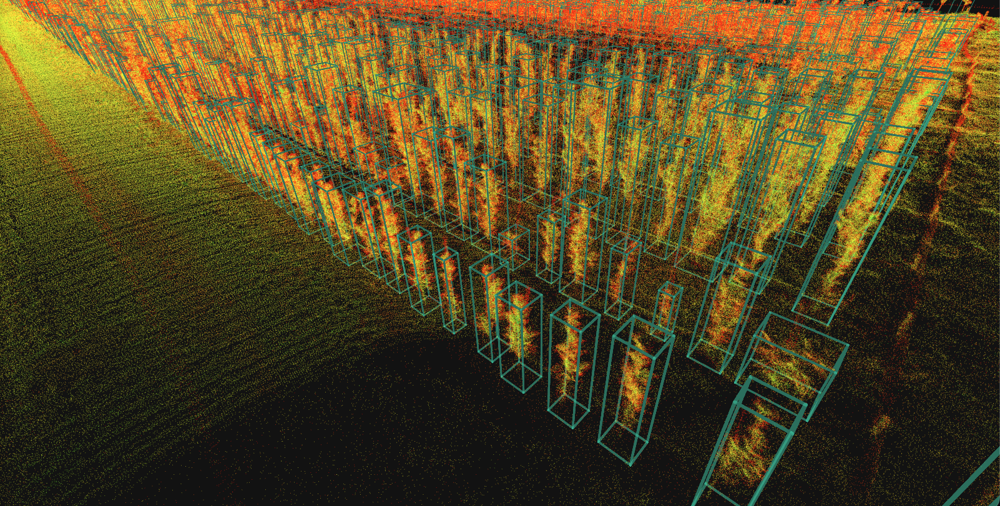
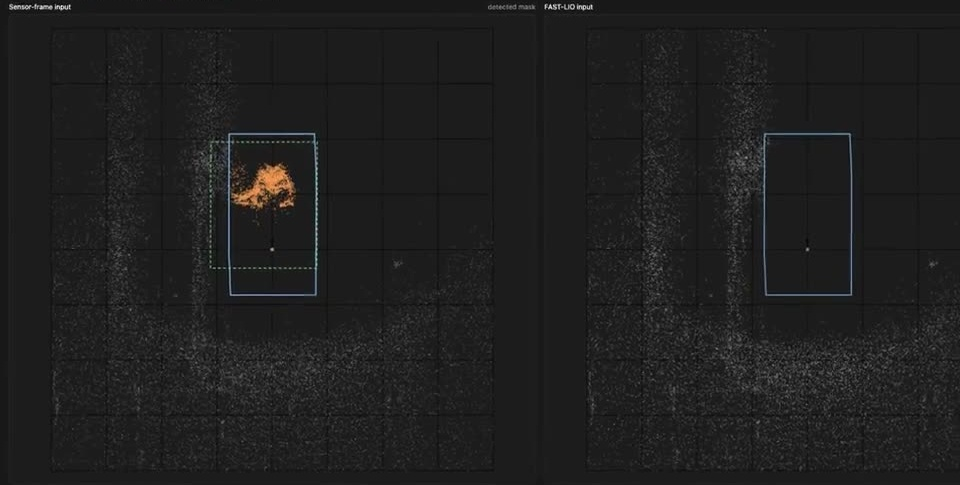
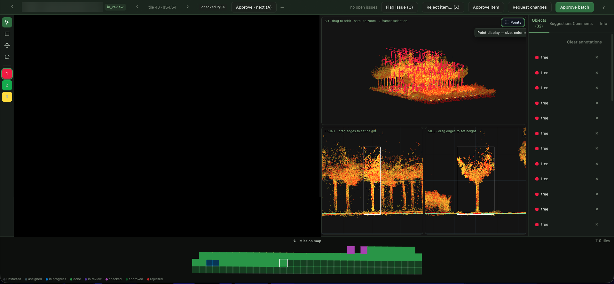
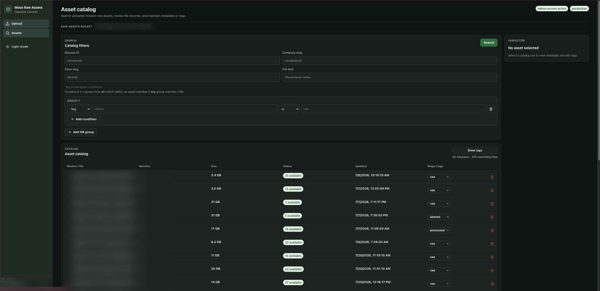

Moss Robotics
Perception Intern · Summer & Fall 2026
Perception and tools for sensor kits used on tree farms.
Experiments

Synthetic training data
- Compared real-only, synthetic-only, and mixed training data for tree detection.
- The models reached diminishing returns with much less real data than I expected.
- Synthetic examples helped most when real data was very scarce; with more real data, their added benefit was small or absent.
- The synthetic dataset was still useful in other model experiments.
Model Architecture
- Experimented with transformer-based tree detectors using 3D scan data.
- Compared input sizes and training configurations across farm types, looking at the trade-off between finding small and large trees.
3D data and normalization
- Studied how different ways of representing 3D LiDAR scan data influenced tree detection.
- Experimented with unifying normalization settings that varied by farm layout and production type.
- Tested point dropout augmentations to make models more robust to changes in point density.
Finding tree rows
- Built an algorithm to detect tree rows, including curved and unevenly spaced ones.
- Removed the need to annotate a reference row before estimating its curvature.
Masking the vehicle in LiDAR
- Developed automatic masking to remove the sensor vehicle from LiDAR scans before mapping.
- Adapted the method to different vehicles.

Tree height detection
- Worked on a model to refine tree-height estimates from 3D detections.
- Estimated the tree’s own vertical extent when a full detection box included a stake or neighboring canopy.
- Pretrained with a large synthetic dataset, then fine-tuned on real data.


3D labeling tool
- Built a labeling platform that brought 2D and 3D annotations into one workflow.
- Added model assistance, review queues, dataset versioning, and exports.

Mission data management
- Built a mission-data catalog for uploads and metadata search.
- Organized recordings with tags and groups.

Other work
- Built a camera-focus tool with per-corner sharpness and tilt feedback.